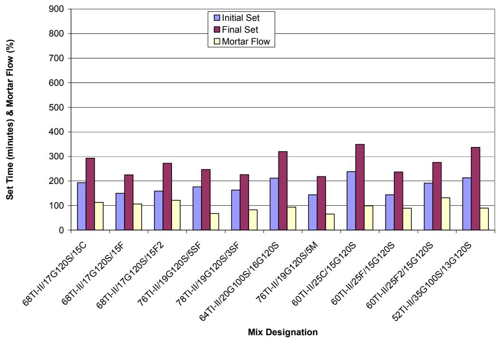
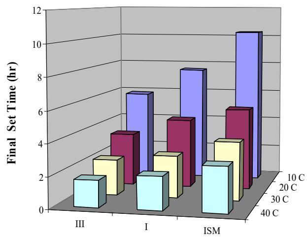
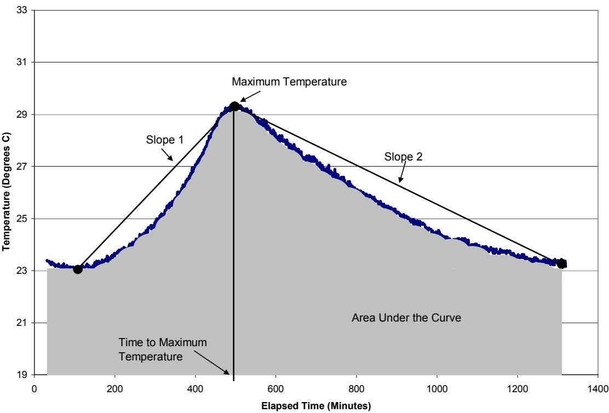
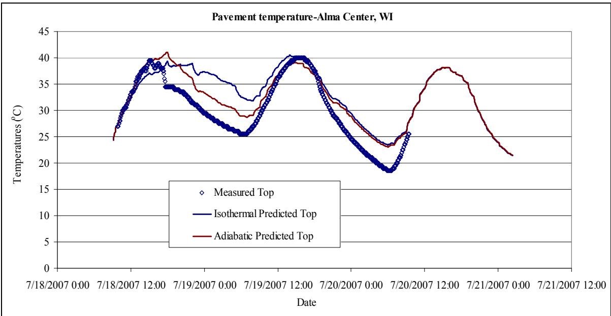
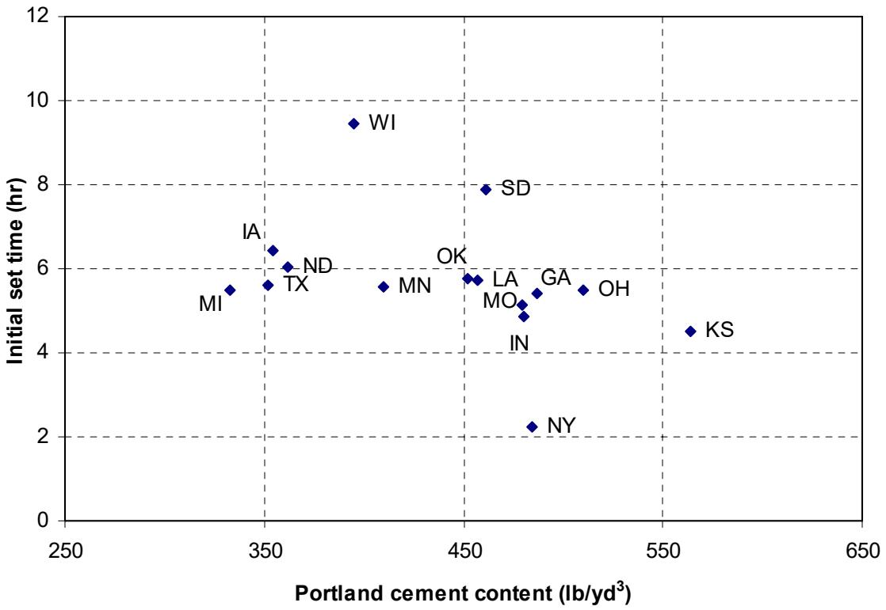

Heat Signature
The Heat Signature is a specific thermal fingerprint of Cement Hydration, defined by the unique temperature-time curve produced during its exothermic chemical reactions [6]. This characteristic heat evolution profile reflects how heat liberation depends on factors such as cement composition and mix proportions [1]. The curve typically begins with a dormant period where little heat is generated, followed by an acceleration period marked by rapid temperature increases due to significant chemical reactions [6].
Sources (13)
Overview of Heat Signature Applications
The heat signature of concrete mixtures is important as it defines the hydration process and gives estimates of the time to initial and final set [2]. This information is essential for predicting setting time, predicting proper curing time, estimating risk of thermal cracking, and identifying sawing/finishing time. Furthermore, the heat liberated during hydration is important especially during cold and hot weather concreting applications [2].

Set time and mortar flow for mixtures containing Type I/II PC [2]Heat Evolution Indexes and Parameters
It should be noted that with the decrease in heat generated, the general tradeoff is a longer time to initial and final set [2], which is most likely due to the moderate amount of heat liberated during hydration [2]. In a laboratory setting, it was observed that Type III cement exhibits the highest values for areas A1 and A3 alongside the lowest set times, indicating faster early-age hydration compared to Type I and ISM cements [3]. Furthermore, testing temperature significantly influences thermal set time variation, with higher curing temperatures reducing variability; this suggests that winter construction poses greater risks for set time and strength development issues than summer construction, making calorimetry a critical tool for seasonal mix design adjustments [4]. Additionally, the rapid heat evolution stage, driven by ion dissolution and reactions between C3A and gypsum, typically lasts only fifteen to thirty minutes and is generally not captured by standard calorimeter tests due to its short duration [1].

Effect of cement type and temperature on set times [3]To characterize a heat signature curve (Figure 21 of wang-2006-simple-rapid-heat-evolution), several proposed parameters are used: t0 — turning point time, Tmax — peak temperature, tmax — time to peak, S1 — slope of initial heat curve, S2 — slope after peak, and A — area under the curve (total heat). For these calculations, Slope 1 was calculated using the maximum temperature and the minimum temperature for the data set up to the maximum temperature [2], while Slope 2 was calculated using the maximum temperature and the minimum temperature for the data set after the maximum temperature [2]. Finally, the ratio of initial to final setting times for most concrete mixtures remains consistently between 0.7 and 0.8 regardless of composition or temperature, providing a reliable benchmark for planning finishing activities like sawing once initial set is observed [5]. It is important to note that this study was conducted in a laboratory setting [2].

Variables slope 1, slope 2, maximum temperature, time to maximum temperature, and area under the curve [2] Characterization of a typical heat evolution curve [1]
Characterization of a typical heat evolution curve [1]
Regression Modeling and Predictive Analysis
Equations 1–7 show the least squares fit regression equations for slope 1, slope 2, maximum temperature, time to maximum temperature, area under the curve, and initial and final set [2], while Equations 8–14 show the results of the stepwise regression analysis [2]. This stepwise regression analysis allowed simplification of the least squares analysis by removing the variables not significantly affecting the model [2]; specifically, the linear models were simplified by removing the insignificant input parameters [2], with the stepwise regression analysis removing from one to four insignificant input variables depending upon the equation [2]. The R-Squared values ranging from 0.651 to 0.756 show that linear approximations model the heat signature characterizations well [2] and show that the linear models are fair [2].
The stepwise regression analysis results allow a producer or engineer to predict key engineering properties such as the area under the curve, time to initial and final set, the maximum temperature, and time to maximum temperature [2]. By using a prediction model, one can narrow the list of possible mix designs in the preconstruction verification stage using set response criteria, saving money and time [2]. While interaction effects may further refine the regression models [2], care should be exercised if extrapolating these models beyond the aforementioned ranges and for materials other than what was used for this study [2]. Additionally, Table 25 shows the variables used in modeling and their units [2].
Effects of Supplementary Cementitious Materials (SCM)
Concrete heat signature curves demonstrate that maximum heat generation decreases as supplementary cementitious material replacement levels increase, resulting in a lower risk of thermal cracking [6]. In ternary cement systems, increasing slag replacement causes the datum temperature to increase linearly while activation energy increases exponentially [6], and replacing ordinary Portland cement with slag does not postpone the dormant period and may slightly accelerate initial set time compared to concrete without slag [6]. To model these effects, the percent of silica fume (SF) and metakaolin (M) in the mixture design were used [2], while a weighted average of the fineness (S) of GGBFS was used to model its effect on the heat signature [2]. The influence of GGBFS fineness is also clearly shown [2]; specifically, as the amount of GGBFS retained on the #325 sieve increases, the area under the curve becomes smaller due to decreased reactivity compared to Portland cement [2]. This is important due to the wide range of mixture combinations available [2]. Furthermore, mixtures containing grade 120 GGBFS are significantly larger than mixtures containing grade 100 GGBFS, which is expected because grade 120 GGBFS is ground more finely [2]; similarly, mixtures containing Grade 120 GGBFS exhibit significantly larger heat signatures than those with Grade 100 GGBFS due to the finer particle size of the Grade 120 material [5].
 Effect of slag on ternary cement concrete heat signature [6]
Effect of slag on ternary cement concrete heat signature [6]
Fly ash calcium oxide content was used as a model parameter because it is readily available on ASTM C 618 reports required by most state agencies [2]. Regarding heat signatures, mixtures containing silica fume have a larger heat signature compared to others as is expected due to the increased pozzolanic action [2], yet the influence of silica fume replacement (3% or 5%) on heat signatures is negligible [2]. The results show that silica fume replacement (3% or 5%) has a negligible influence on heat signatures when comparing their respective curves [2], and silica fume replacement rates between 3% and 5% have a negligible influence on the resulting heat signature [5]. Consequently, a 5% replacement rate may be used in high performance concrete applications with no noticeable effect [2], showing that a 5% replacement rate may be used if needed in high performance concrete applications with no noticeable effect on the heat signature [2].
While fly ash delays peak heat, slag can create two peaks [6].
Regarding heat signatures, mixtures containing Grade 120 slag cement are significantly higher than those with grade 100 slag cement, while the influence of silica fume replacement (3 or 5 percent) remains negligible [7].
Cement Chemistry And Admixture Testing
To detect cement-admixture incompatibility, check cement characteristics, and verify concrete mix proportions, chemical and heat signature testing should be utilized to identify incompatibilities between cementitious materials and admixtures, as well as other environmental, production, and transport issues that affect hydration characteristics [8]. For instance, when 25% Class C fly ash and a water reducer are combined in an incompatible mixture, the initial set decreases from 6.2 to 2.6 hours while area A1 increases from 20.2 to 44.0 [3]. Robust testing with 50% deviations in water reducer or fly ash dosages shifts heat generation curves left or right without altering their fundamental shape, confirming that incompatibility issues manifest as curve distortion rather than simple time shifts; this behavior allows engineers to establish acceptable heat evolution boundaries for quality control [4].
 Calorimetry results for the incompatible materials [3]
Calorimetry results for the incompatible materials [3]
In rapid-set cement, the addition of citric acid extends the dormant period and shifts the peak rate of heat generation later in time, effectively acting as a retarding admixture; while latex addition does not significantly alter the heat signature, citric acid reduces cumulative heat until approximately 7.5 hours before reversing the trend [9]. Calcium sulfoaluminate (CSA) cement exhibits a sharp heat generation peak without any dormant period, indicating that initial hydration occurs very quickly and setting is faster than conventional cements; this rapid early-age hydration can lead to significant thermal cracking risks if the concrete experiences a large temperature drop after exposure to low-temperature environments [9]. Finally, increasing mixing energy through high shear mixing accelerates the onset of major heat generation compared to normal mixing methods, with peak hydration reactions occurring earliest at approximately 14,000 revolutions per minute for 60 seconds [10].
 Heat of hydration results for 100% PC, high shear mixer [10]
Heat of hydration results for 100% PC, high shear mixer [10]
Correlation with Concrete Strength and Stiffness
For instance, a linear relationship exists between the generated heat of mortar samples up to two days and their compressive strength [3], while the area underneath the heat signature curve serves as a direct indicator of one-day strength gain in cementitious materials [7].
 (a). Concrete temperatures versus time for heat of hydration [7]
(a). Concrete temperatures versus time for heat of hydration [7]
Field Calorimetry Methods And Equipment
To measure heat signature in the field rather than solely deriving it from laboratory data, a field-ready version of the adiabatic calorimeter is required [11]. In laboratory settings, two iQdrum calorimeters are utilized to determine the precise heat signature of both mortar and concrete samples [12]. While semi-adiabatic tests using concrete samples provide higher accuracy for pavement temperature prediction in HIPERPAV software compared to isothermal mortar tests—because the semi-adiabatic condition more closely mimics in-situ pavement temperatures and captures the thermal mass effects of aggregate present in field concrete [4]—simple isothermal calorimetry tests on sieved mortar samples reveal a distinct second heat generation peak associated with fly ash hydration. This secondary peak, which is typically absent in AdiaCal or IQ Drum semi-adiabatic results, allows for the identification of delayed strength development mechanisms specific to blended cements [4]. Furthermore, isothermal calorimetry is limited to approximately seven days of testing because signal sensitivity limitations make it difficult to distinguish hydration heat from background noise beyond that duration [1].
 Isothermal calorimetry results for US 71 (Atlantic, IA) field concrete samples [4]
Isothermal calorimetry results for US 71 (Atlantic, IA) field concrete samples [4]
Different calorimetric methods offer varying levels of precision and environmental control. Finally, simple calorimetry devices such as Dewar flasks, coffee cups, and sprayed-foam baskets provide critical hydration feedback within 12–48 hours [3].
Within these studies, semi-adiabatic calorimetry tests conducted on concrete samples provide hydration curve parameters that more accurately predict in-situ pavement temperatures compared to isothermal tests performed on cement mortar [4].

Predicted pavement temperatures versus measurements (pavement top, Alma Center, WI ) [4]Field Testing and Practical Implementation
Selecting the right mix for different environmental conditions is essential, as field results may differ from laboratory settings depending upon climatic conditions [2] or simply depending upon climatic conditions [2]. Because the heat signature test is sensitive to pavement performance, it necessitates the development of additional thermal property tests such as specific heat and thermal conductivity of Portland cement concrete (PCC) [11]. For instance, a mixture design exhibiting a large temperature rise during hydration may not be suitable for hot weather concreting applications, but may be ideally suited for cold weather concreting applications [2]. To assist in this selection, the coffee cup test serves as a rapid field method to assess the quick heat generation characteristics of cementitious materials, providing an early indicator of hydration behavior [12].

Initial Set versus Portland Cement Content [12]Regarding specific testing methodologies, AdiaCal semi-adiabatic calorimetry results are highly sensitive to concrete placement temperature, causing significant variation in thermal curves even for samples cast on the same day; this sensitivity limits its utility for precise quality control but makes it effective for predicting field set times [4]. To improve consistency, mortar samples sieved from field concrete exhibit significantly less variation in calorimetry parameters compared to full concrete samples, making sieved mortar the recommended specimen type for field calorimetric testing, which improves the consistency of heat evolution data across different projects [4]. Furthermore, the microwave method serves as a necessary supplementary test because neither isothermal nor AdiaCal calorimeters can reliably identify changes in the water-to-cement ratio of field concrete, highlighting the need for multi-modal testing strategies to detect all critical mix proportion variations [4].
 AdiaCal calorimeter [4]
AdiaCal calorimeter [4]
Section Thickness Effects
The peak temperature caused by ambient changes occurs later in thicker concrete sections because a greater volume requires more time to reach its maximum thermal state [13].
HIPERPAV Program Application
The FHWA HIPERPAV® program characterizes concrete mixtures using a unique thermal signature representing the amount and rate of heat generated through hydration, measured via isothermal, adiabatic, or semi-adiabatic calorimeters [11].
Related
References
- K. Wang, Z. Ge, J. Grove, J. M. Ruiz, and R. Rasmussen, "Developing a Simple and Rapid Test for Monitoring the Heat Evolution of Concrete Mixtures (Phase 3)," CTRE, Iowa State University, Ames, IA, Rep. FHWA Project 17 (Phase I), 2006. [Online]. Available: https://www.intrans.iastate.edu/wp-content/uploads/2018/03/CalorimeterReportPhaseIII.pdf
- P. Tikalsky, V. Schaefer, K. Wang, B. Scheetz, T. Rupnow, A. St. Clair, M. Siddiqi, and S. Marquez, "Development of Performance Properties of Ternary Mixes, Phase 1," Center for Transportation Research and Education, Ames, IA, Rep. TPF-5(117), 2007. [Online]. Available: https://www.intrans.iastate.edu/research/completed/development-of-performance-properties-of-ternary-mixes-phase-1/
- K. Wang, Z. Ge, J. Grove, J. M. Ruiz, R. Rasmussen, and T. Ferragut, "Simple and Rapid Test for Monitoring the Heat Evolution of Concrete Mixtures, Phase 2," Center for Transportation Research and Education, Ames, IA, 2007. [Online]. Available: https://www.intrans.iastate.edu/wp-content/uploads/2018/03/calorimeter.pdf
- K. Wang, J. M. Ruiz, J. Hu, Z. Ge, Q. Xu, J. Grove, and R. Rasmussen, "Simple and Rapid Test for Monitoring the Heat Evolution ..., Phase III," National Concrete Pavement Technology Center, Ames, IA, 2008. [Online]. Available: https://www.intrans.iastate.edu/wp-content/uploads/2018/03/CalorimeterReportPhaseIII.pdf
- P. Tikalsky, P. Taylor, S. Hanson, and P. Ghosh, "Development of Performance Properties of Ternary Mixtures: Laboratory Study on Concrete," National Concrete Pavement Technology Center, Ames, IA, Rep. TPF-5(117), 2011. [Online]. Available: https://www.intrans.iastate.edu/research/completed/development-of-performance-properties-of-ternary-mixtures-laboratory-study-on-concrete/
- K. Wang and Z. Ge, "Evaluating Properties of Blended Cements for Concrete Pavements," Department of Civil, Construction and Environmental Engineering, Iowa State University, Ames, IA, 2003. [Online]. Available: https://www.intrans.iastate.edu/wp-content/uploads/2018/03/blended_cements-1.pdf
- P. Taylor, P. Tikalsky, K. Wang, G. Fick, and X. Wang, "Development of Performance Properties of Ternary Mixtures: Field Demonstrations and Project Summary," National Concrete Pavement Technology Center, Ames, IA, Rep. TPF-5(117), 2012. [Online]. Available: https://www.intrans.iastate.edu/wp-content/uploads/2018/03/ternary_final_w_cvr.pdf
- S. Schlorholtz, K. Wang, J. Hu, and S. Zhang, "Materials and Mix Optimization Procedures for PCC Pavements," CTRE, Iowa State University, Ames, IA, Rep. TR-484, 2006. [Online]. Available: https://www.intrans.iastate.edu/wp-content/uploads/2018/03/mco-final.pdf
- K. Wang, B. M. Shankaramurthy, A. Anand, Y. Sargam, K. Freeseman, and B. Phares, "Performance Evaluation of Very Early Strength Latex-Modified Concrete (LMC-VE) Overlay," Institute for Transportation, Iowa State University, Ames, IA, Rep. TR-771, 2024. [Online]. Available: https://bec.iastate.edu/wp-content/uploads/2024/10/performance_evaluation_of_LMC-VE_overlay_w_cvr.pdf
- T. D. Rupnow, V. R. Schaefer, K. Wang, and B. L. Hermanson, "Improving PCC Mix Consistency and Production Rate through Two-Stage Mixing," Center for Transportation Research and Education, Ames, IA, Rep. TR-505, 2007. [Online]. Available: https://www.intrans.iastate.edu/wp-content/uploads/2018/03/two-stage-mix-1.pdf
- D. Harrington, R. Rasmussen, D. Merritt, T. Cackler, and P. Taylor, "Long-Term Plan for Concrete Pavement Research and Technology—The Concrete Pavement Road Map (Second Generation): Volume II, Tracks (FHWA-HRT-11-070)," National Center for Concrete Pavement Technology, Iowa State University, Ames, IA, 2012. [Online]. Available: https://www.fhwa.dot.gov/publications/research/infrastructure/pavements/pccp/11070/11070.pdf
- J. Grove, G. Fick, T. Rupnow, and F. Bektas, "Material and Construction Optimization for Prevention of Premature Pavement Distress in PCC Pavements," National Concrete Pavement Technology Center, Ames, IA, Rep. TPF-5(066), 2008. [Online]. Available: https://www.intrans.iastate.edu/wp-content/uploads/2018/03/mco-final.pdf
- H. Ceylan, L. Dong, S. Yang, Y. Jiao, S. Yavas, S. Kim, K. Gopalakrishnan, and P. Taylor, "Development of a Wireless MEMS Multifunction Sensor System and Field Demonstration of Embedded Sensors for Monitoring Concrete Pavements, Volume I," Institute for Transportation, Ames, IA, Rep. TR-637, 2016. [Online]. Available: https://prosper.intrans.iastate.edu/wp-content/uploads/2018/03/wireless_MEMS_volume_I_field_demo_w_cvr.pdf
Feedback on this page